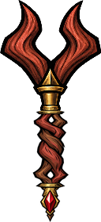
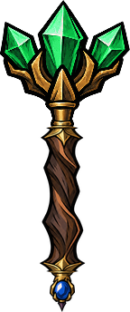
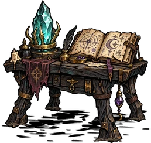
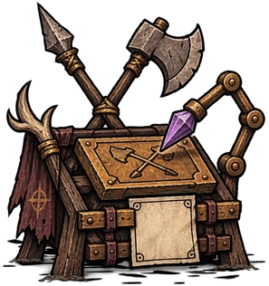
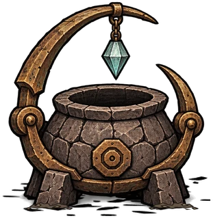

New cards, new ways to cast
Homing → Spark Bolt bends shots toward enemies. Double Cast → Spark Bolt → Magic Arrow releases two spells together. Non-shuffle wands follow slot order; shuffle wands mix the deck.
Explore this spell →Weave your next spell.
Inspired by Noita, bring wand building to Don’t Starve Together. Collect random wands and spell cards, arrange their order, and create your own attacks, tools and melodies.


In the mod settings, choose Auto / 中文 / English and rejoin the world. Each player chooses independently. Use a Feather Pencil on a wand to rename it; custom names stay as written.
Homing → Spark Bolt bends shots toward enemies. Double Cast → Spark Bolt → Magic Arrow releases two spells together. Non-shuffle wands follow slot order; shuffle wands mix the deck.
Explore this spell →Magic Arrow · Collision → Axe Whirl sends a melee attack to the impact point. Collision and timer carriers control when payloads fire; crystals and payload eggs can wait on the battlefield.
Explore this spell →Engrave familiar weapons and tools at the Weapon Engraving Table. Shadow Reaper harvests plants along its path, turning a combat wand into a useful helper.
Explore this spell →Combine Chum and Sea Fishing Rod engravings for ocean fishing. Pond fishing rods and garden hoes have their own uses too; check each card for its effects and limits.
Explore this spell →Summon native stars with Star Caller’s and Moon Caller’s engravings, then add Homing, Speed Up or Giant Projectile. Enlargement expands their appearance and light, temperature and sanity areas without directly increasing damage.
Explore this spell →Combine ocarina and kantele note cards with pitch modifiers. Speed Up and Slow Down change sample duration; holding cast remains subject to character animations and is not an automatic metronome.
Explore this spell →Performance: a short passage from Deep Sea Girl, played with note cards.
Watch the performance on Bilibili ↗Stand near an Alchemy Engine and open Prototypers & Stations or Magic in the crafting menu, or search for the names below. The Arcane Workbench is enough to start crafting and combining spells; add the engraving table and recycler as needed.

2 Boards, 2 Cut Stone, 4 Gold Nuggets, 2 Purple Gems. Build this first: grind gems into Arcane Dust and craft wands, blank cards and spell cards. Equip a wand nearby, then click or drag cards to install or rearrange them.

2 Boards, 2 Cut Stone, 1 Purple Gem. Use blank cards, the specified weapons or tools, and recipe materials to engrave their spells. Install finished cards at the Arcane Workbench.

2 Cut Stone, 1 Purple Gem, 4 Arcane Dust. Make dust at the workbench first. Drop unwanted cards, piles or wands within 4 units, then right-click to recycle; move to stop. Recycling a wand drops its installed cards. Put loose cards you want to keep safely away first.
Try your first combination on a Spell Test Punching Bag: craft it at a Science Machine with 3 Cut Grass and 1 Board, under Combat or Magic, or search its name. While a wand is equipped, the question mark at the top right of its editor opens this guide.
Starting wand is enabled by default. On your first visit to the world, you receive a two-slot wand with Spark Bolt installed. Equip it and right-click to try it. If the host disables this option, or you want another wand, follow these steps.
At an Alchemy Engine, use 2 Boards, 2 Cut Stone, 4 Gold Nuggets and 2 Purple Gems. Place the workbench beside your storage: you will return here to rearrange cards.
At the workbench, grind 1 Red, Blue or Purple Gem with 1 Gold Nugget into 4 Arcane Dust. Add 4 Twigs and 2 Gold Nuggets to craft a two-slot, non-shuffle wand with Spark Bolt already installed.
Click once to fire, or stand still and hold right mouse to keep casting. Watch the mana bar and cooldown ring above your equipment slots. Mana regenerates; successful casts also cost sanity.
Equip the wand, then click or drag cards between inventory and spell slots. You can still view slots away from the workbench. Move Spark Bolt to slot two, put Damage Plus in slot one, and try another shot.
1 Papyrus, 2 Charcoal and 2 Dust make two Blank Spell Cards. The Arcane Workbench inscribes projectiles, modifiers and notes; the Weapon Engraving Table makes melee moves and weapon engravings. Search the archive for exact recipes.
A creature's natural loot helps determine its card pool. For example, Silk links spiders to Speed Down. Some creatures also have signature drops, and the six basic projectiles may drop as collision or timer variants.
Certain bosses drop random wands with spells installed. Take them to the workbench to remove cards and build your own combinations. Crafted Common, Fine and Rare random wands start with empty slots.
One more chance · Eligible creatures with over 200 maximum health have a default 1-in-10,000 chance to drop a random card if they dropped neither a loose card nor a loaded wand. The world's card drop-rate setting affects this chance.
For multiplayer, install the mod on both the server and each client. Players can choose Chinese or English independently. World settings control card drop rates, payload depth and field entity limits.
Inspired by Noita and developed by yuejian with Codex. Share your builds and report issues on GitHub.